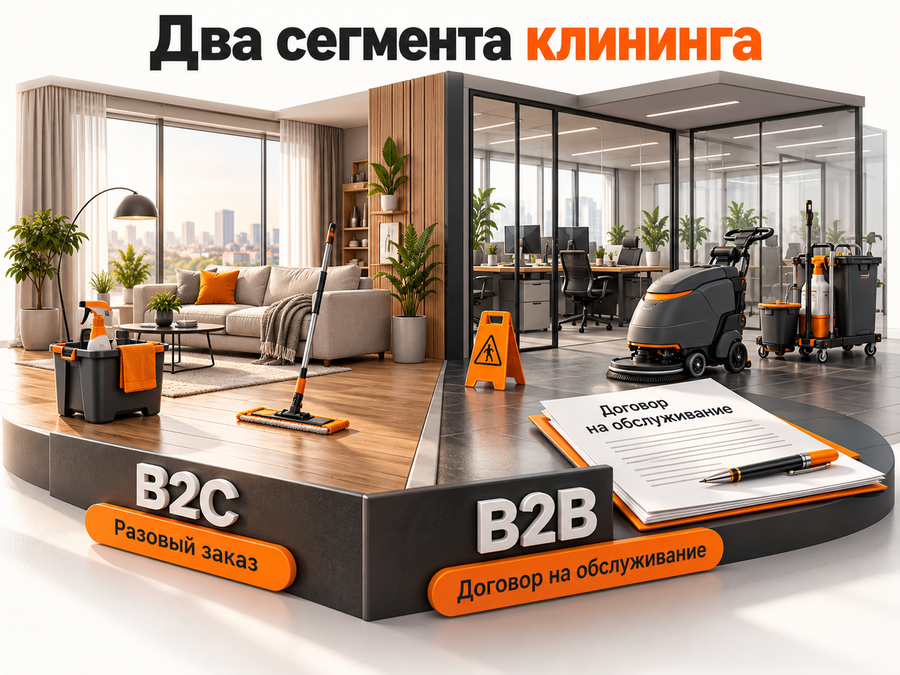
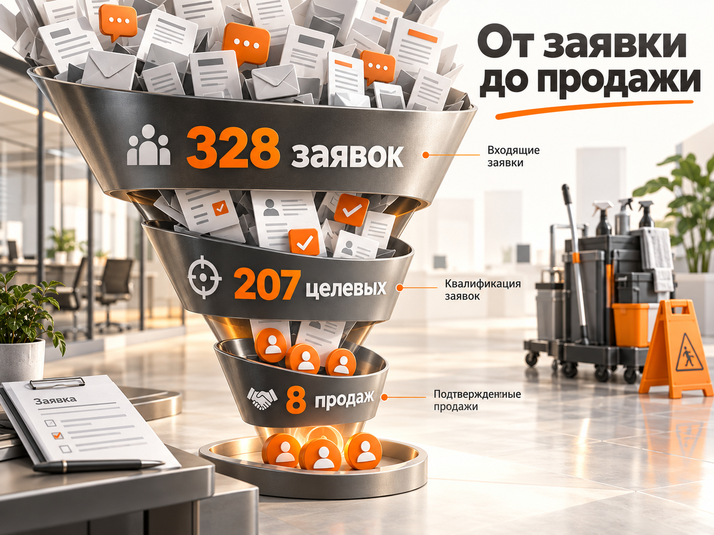

Блог о платном трафике
Продвижение клининговых услуг в 2026 году: каналы, бюджет и заявки
Для продвижения клининговых услуг в 2026 году я бы использовал Яндекс Директ, Авито, Яндекс Карты и SEO. Начинать лучше с поисковой рекламы по конкретным услугам: генеральная уборка, уборка после ремонта, клининг квартир или офисов. Затем подключать дополнительные каналы, оценивать стоимость привлечения клиентов и развивать повторные продажи.
Для предварительного расчёта рекламы частного клининга можно заложить стоимость обращения от 1500 до 3000 ₽. Это не среднерыночная цена, а диапазон для финансового моделирования. В опубликованных кейсах встречаются и более дешёвые конверсии, но далеко не каждая из них становится реальным заказом.
Главное правило продвижения клининговой компании: оценивать не только стоимость заявки, но и прибыль от привлечённого клиента с учётом повторных уборок.
Ниже разберём, какие услуги выгоднее рекламировать, какие каналы использовать, сколько денег закладывать на тест и каких результатов можно ожидать.
Рынок клининговых услуг в России в 2026 году
Российский рынок клининга продолжает расти, но увеличение оборота не означает пропорционального роста количества заказов.
По данным исследования BusinesStat, опубликованного в июле 2026 года, оборот рынка клининга в России за 2025 год увеличился на 11% и достиг 711 млрд ₽. Значительная часть роста связана с повышением тарифов из-за подорожания труда, химии и оборудования.
Более 80% оборота приходится на корпоративный сегмент. Это обслуживание офисов, торговых площадей, складов, производств и других коммерческих объектов.
Со стороны частных клиентов также наблюдался рост спроса. По данным «Коммерсанта» за январь-апрель 2025 года, интерес к клинингу на Авито Услугах увеличился на 21% год к году, на Профи.ру - на 15%. Средний чек по данным «Чек Индекса» достигал 3,4 тыс. ₽.
Последние показатели относятся именно к 2025 году. Их нельзя автоматически считать темпами роста 2026 года.
Для собственника клининговой компании важны три вывода:
- Спрос на профессиональную уборку существует как среди частных клиентов, так и среди организаций.
- Конкуренция за клиентов сопровождается ростом расходов на персонал и выполнение заказов.
- Высокий оборот рынка не гарантирует высокой прибыльности отдельной компании.
Поэтому начинать продвижение нужно с выбора направления и расчёта экономики, а не с покупки максимального количества рекламных кликов.
Чем отличается продвижение B2C и B2B клининга
Частный и корпоративный клининг нужно продвигать отдельно. У этих направлений разные клиенты, поисковые запросы, сроки принятия решений и стоимость привлечения.
| Параметр | B2C: частные клиенты | B2B: организации |
|---|---|---|
| Что заказывают | Уборку квартир, домов, химчистку | Уборку офисов, складов, производств |
| Основная задача клиента | Быстро получить качественную уборку | Найти надёжного подрядчика |
| Принятие решения | Обычно быстрее | Может включать согласования |
| Что важно на сайте | Цена, отзывы, сроки, гарантии | Договор, условия, опыт, оборудование |
| Продажа | Разовый или регулярный заказ | Разовая работа или долгосрочный контракт |
| Главный показатель | Стоимость клиента и повторные заказы | Стоимость квалифицированного лида и контракта |

Частный и корпоративный клининг отличаются покупателями, условиями продажи и требованиями к рекламе.
Продвижение частного клининга
Частный клиент обычно сравнивает несколько предложений. Ему важно понимать стоимость уборки, перечень работ и доступность свободного времени.
Особое значение имеют фотографии выполненных работ, отзывы и доверие к сотрудникам, которых придётся пустить домой.
Для B2C я бы в первую очередь рассматривал Поиск Яндекса, Авито, локальные площадки и рекомендации.
Продвижение корпоративного клининга
Корпоративный заказчик оценивает не только цену. Для него могут быть важны возможность работы по договору, наличие оборудования, опыт обслуживания аналогичных объектов, график уборки и финансовые условия.
Продажа иногда требует осмотра помещения, подготовки коммерческого предложения и нескольких согласований.
Поэтому лид на уборку промышленного объекта может стоить существенно дороже обращения на уборку квартиры. Сравнивать их по одной средней стоимости заявки неправильно.
Если клининговая компания обслуживает оба сегмента, я бы разделил рекламные направления, посадочные страницы и отчёты по эффективности.
Какие клининговые услуги выгоднее продвигать
На старте лучше выбрать несколько услуг с понятной экономикой, чем одновременно рекламировать весь возможный ассортимент уборки.
Для частного клининга я бы рассмотрел:
- Генеральную уборку квартир и домов.
- Уборку после ремонта.
- Регулярную поддерживающую уборку.
- Уборку перед заселением и после арендаторов.
- Химчистку мебели как самостоятельную услугу или дополнение к заказу.
Для корпоративного направления перспективны регулярная уборка офисов, обслуживание торговых площадей, складов и производственных помещений, а также специализированные работы, которые компания действительно умеет выполнять.
Но высокая стоимость заказа сама по себе не делает направление выгодным.
Например, уборка после ремонта может принести крупный разовый чек, но потребовать значительных расходов на сотрудников и оборудование. Поддерживающая уборка может иметь меньший чек, зато один клиент способен возвращаться несколько раз в месяц.
Приоритет для рекламы стоит определять по маржинальному доходу, повторяемости заказов и доступной стоимости привлечения клиента.
Где рекламировать клининговую компанию
У каждого рекламного канала своя задача. Для нового бизнеса я бы расставлял приоритеты следующим образом.
| Канал | Для каких задач подходит | Что измерять |
|---|---|---|
| Яндекс Директ: Поиск | Горячий спрос на конкретные услуги | CPL, квалифицированные лиды, CAC |
| Авито | Частные заказы, локальный спрос | Контакты, заказы, CAC |
| Яндекс Карты | Локальная узнаваемость и доверие | Реальные звонки, обращения, заказы |
| SEO | Долгосрочное получение поискового трафика | Целевые обращения, продажи |
| РСЯ | Дополнительный охват и возврат аудитории | Качество лидов, CAC |
| Партнёрства | Рекомендации от связанных бизнесов | Заказы, стоимость партнёрского привлечения |
| CRM и повторные продажи | Увеличение дохода от существующих клиентов | Повторные заказы, удержание, маржа |
Универсального победителя нет. Но когда компания выходит на рынок без собственной клиентской базы, разумно сначала проверить сформированный поисковый спрос.
Для частного клининга параллельно имеет смысл тестировать Авито и оформлять присутствие в Яндекс Картах.
Как настроить рекламу клининговых услуг в Яндекс Директе
Для нового клинингового проекта я бы начал с поисковой рекламы по услугам, которые компания реально выполняет и по которым известна экономика.
1. Разделить поисковые запросы по направлениям
Примеры запросов для частных клиентов:
- генеральная уборка квартиры заказать;
- уборка квартиры после ремонта;
- клининговая компания цена;
- заказать уборку дома;
- профессиональная мойка окон.
Примеры для бизнеса:
- клининг офисов;
- ежедневная уборка офиса;
- клининг склада;
- уборка производственных помещений;
- клининговое обслуживание организаций.
Географические уточнения нужно добавлять с учётом фактической территории обслуживания.
Запросы на уборку после ремонта не следует смешивать с запросами на ежедневную уборку офисов. Пользователям нужны разные услуги, предложения и посадочные страницы.
2. Исключить неподходящий спрос
В клининге легко расходовать бюджет на запросы, которые не соответствуют услугам компании.
Если бизнес не выполняет соответствующие работы, стоит проверить и исключить запросы на:
- вакансии и работу клинером;
- обучение клинингу;
- покупку уборочного оборудования;
- самостоятельное приготовление чистящих средств;
- химчистку мебели;
- уборку после пожара;
- вывоз строительного мусора.
Это не универсальный список минус-слов. Например, химчистка мебели может быть самостоятельным прибыльным направлением.
Окончательный список необходимо составлять по ассортименту услуг и регулярно уточнять по отчёту поисковых запросов.
3. Настроить географию и время показов
Для выездных услуг важно учитывать не только город, но и районы, до которых сотрудники реально могут добраться.
Если уборка в удалённом районе требует значительных транспортных расходов, это влияет на экономику заказа.
Время показа рекламы также нужно согласовывать с возможностью обработки обращений. Если заявки поступают ночью, компания должна иметь понятный механизм ответа на них.
4. Начать с Поиска, затем оценить РСЯ
Поиск позволяет обращаться к людям, которые уже сформулировали потребность.
РСЯ может использоваться для расширения охвата, ретаргетинга и привлечения дополнительного спроса. Однако более дешёвый клик не гарантирует более дешёвого покупателя.
Для первоначального теста я бы разделял статистику Поиска и РСЯ, чтобы видеть стоимость реальных заказов в каждом канале.
Мастер кампаний тоже можно тестировать, но отдельно оценивая качество полученных обращений.
5. Не дробить статистику без необходимости
При небольшом бюджете десятки отдельных кампаний могут привести к нехватке данных для автоматических стратегий.
По официальной документации Яндекса, для обучения стратегии желательно получать не менее 10 конверсий в неделю по выбранной цели. Для оплаты за конверсии также действуют требования к бюджету.
Если заявка обходится в 2000 ₽, для получения десяти таких заявок потребуется около 20 000 ₽ рекламных расходов в неделю.
Это расчёт, а не минимально допустимый бюджет для любой рекламы клининга.
Если статистики мало, можно использовать подходящую стратегию с оплатой за клики, не дробить кампании чрезмерно и сначала накопить данные о реальных обращениях.
Важно не подменять качественные заявки простыми действиями вроде просмотра страницы или нажатия на номер телефона, не контролируя итоговые продажи.
Каким должен быть сайт клининговой компании
Для повышения конверсии рекламного трафика лучше использовать отдельные страницы под основные виды услуг.
Пользователь, который ищет уборку квартиры после ремонта, должен сразу увидеть соответствующее предложение, а не общий список всех направлений компании.
На коммерческой странице желательно показать:
- Стоимость уборки или понятный порядок расчёта.
- Что входит в услугу и какие работы оплачиваются отдельно.
- Фотографии выполненных работ.
- Состав команды и используемое оборудование.
- Территорию обслуживания.
- Свободные даты или порядок согласования времени.
- Гарантии, отзывы и условия оплаты.
- Быстрый способ заказать уборку.
Для корпоративного направления дополнительно нужны сведения об условиях договора, опыте обслуживания объектов, графике работ и возможности подготовки коммерческого предложения.
Нужен ли калькулятор стоимости уборки
Калькулятор полезен, когда помогает клиенту быстро получить ориентир по цене.
Например, для квартиры достаточно запросить площадь, тип уборки и основные дополнительные услуги.
Если для получения цены нужно заполнить длинную анкету с непонятными вопросами, калькулятор способен ухудшить конверсию.
В опубликованном в апреле 2026 года кейсе федеральной клининговой сети агентство обнаружило проблему именно в логике калькулятора. Пользователю предлагали указать время начала уборки, не объяснив её продолжительность.
Поэтому я бы оценивал не наличие калькулятора, а долю пользователей, которые после расчёта действительно отправляют заявку и заказывают уборку.
Сколько клининговая компания может платить за заявку
Допустимая стоимость заявки определяется маржой заказа и вероятностью его продажи.
Рассмотрим условную модель для частного клининга.
Средний чек уборки составляет 8000 ₽. После оплаты исполнителей, расходных материалов и транспорта остаётся 3000 ₽ маржинального дохода до маркетинга и постоянных расходов.
Из десяти полученных лидов три превращаются в оплаченные заказы. Конверсия лида в заказ равна 30%.
Максимальная стоимость заявки для покрытия привлечения первым заказом:
3000 ₽ × 30% = 900 ₽.
При таком CPL рекламный расход в среднем равен маржинальному доходу первого заказа. Постоянные расходы и прибыль бизнеса ещё не покрыты.
Но предположим, что один привлечённый клиент в среднем делает 2,5 заказа за рассматриваемый период.
Тогда маржинальный доход с него до маркетинга составит:
3000 ₽ × 2,5 = 7500 ₽.
При прежней конверсии лида в клиента условная предельная стоимость обращения увеличится:
7500 ₽ × 30% = 2250 ₽.
Повторные заказы способны существенно изменить допустимый рекламный бюджет.
При этом нужно учитывать фактическое удержание клиентов, стоимость повторных коммуникаций, постоянные расходы и прибыль. Использовать прогнозные повторные заказы как гарантированный будущий доход нельзя.
При повторных заказах допустимая стоимость привлечения может увеличиться, если сохраняется маржинальность.
Подробнее о расчётах: Стоимость привлечения клиента (CAC).
Сколько стоит заявка на клининг из Яндекс Директа в 2026 году
Единой достоверной средней стоимости заявки на клининг по всей России нет. Цена зависит от города, услуги, конкуренции, сайта, определения конверсии и работы отдела продаж.
Рассмотрим два опубликованных осенью 2026 года примера.
| Показатель | Владимир, B2C и B2B | Город-миллионник, B2B |
|---|---|---|
| Период | 31.08‑04.10.2026 | 6 недель, кейс опубликован в октябре 2026 |
| Расходы | 48 158 ₽ | 390 000 ₽ |
| Зафиксированные действия | 100 конверсий | 328 заявок |
| Стоимость действия / заявки | 482 ₽ | 1189 ₽ |
| Квалифицированные лиды | Нет полной разбивки | 207 |
| Продажи | Не опубликованы полностью | 8 |
В первом примере агентство «Невский Маркетинг» отдельно указало, что значительная часть конверсий включала нажатия на номер телефона. Такой клик не гарантирует состоявшийся звонок.
Во втором примере, опубликованном Everest Solution в октябре 2026 года, можно рассчитать дополнительные показатели:
- CPL: 390 000 / 328 = примерно 1189 ₽.
- Стоимость квалифицированного лида: 390 000 / 207 = примерно 1884 ₽.
- Стоимость продажи: 390 000 / 8 = 48 750 ₽.
Это данные опубликованных агентских кейсов, а не независимо аудированная рыночная статистика. Без информации о маржинальности и повторных контрактах нельзя определить, окупилось ли привлечение восьми клиентов.
Такие примеры показывают, почему дешёвая конверсия в Метрике и экономически выгодная продажа не одно и то же.

В опубликованном B2B-кейсе из 328 заявок до продажи дошли только 8. Поэтому CPL необходимо оценивать вместе со стоимостью клиента.
Какие значения использовать для первоначального прогноза
Если у компании пока нет собственных данных, для условного B2C-прогноза я бы проверял три уровня CPL:
- 1500 ₽ как благоприятный сценарий.
- 2200 ₽ как рабочий расчётный сценарий.
- 3000 ₽ как осторожный сценарий.
Эти значения предназначены для оценки жизнеспособности рекламы, а не являются подтверждённой нормой рынка.
Для корпоративного и промышленного клининга стоимость лида следует прогнозировать отдельно, исходя из стоимости потенциального контракта и конверсии в продажу.
Прогноз заявок на клининг при бюджете 100 000 ₽
Предположим, клининговая компания ежемесячно тратит на Яндекс Директ 100 000 ₽.
Рассчитаем три сценария с разной стоимостью обращения и конверсией лида в заказ.
| Показатель | Осторожный | Рабочий | Сильный |
|---|---|---|---|
| Бюджет | 100 000 ₽ | 100 000 ₽ | 100 000 ₽ |
| CPL | 3000 ₽ | 2200 ₽ | 1500 ₽ |
| Лиды | ≈33 | ≈45 | ≈67 |
| Лид в заказ | 20% | 30% | 40% |
| Заказы | ≈7 | ≈14 | ≈27 |
| CAC | ≈15 000 ₽ | ≈7300 ₽ | ≈3750 ₽ |
Конверсии 20%, 30% и 40% здесь являются допущениями для расчёта, а не средними значениями по рынку. Количество лидов и заказов округлено, а CAC рассчитан на основе неокруглённых значений.
В прогноз входит только рекламный бюджет. Работа специалиста, разработка сайта, CRM, телефония, производство контента и другие расходы не учитываются.
Из таблицы видно, что при одинаковом бюджете стоимость нового клиента может различаться в несколько раз.
Как оценить окупаемость
Предположим, средний заказ приносит клининговой компании 4000 ₽ маржинального дохода до рекламы и постоянных расходов.
В рабочем сценарии стоимость привлечения клиента составляет около 7300 ₽.
Следовательно, первый заказ не покрывает рекламные затраты на клиента. Для компенсации привлечения потребуется около двух аналогичных заказов, а для получения прибыли с учётом постоянных расходов может понадобиться больше.
Если повторных заказов не будет, такая модель привлечения клиентов окажется экономически проблемной.
Поэтому прогноз рекламы клининговых услуг нельзя считать завершённым без оценки среднего чека, маржинального дохода и повторных покупок.
Для расчётов по своему городу можно использовать инструмент прогноза рекламного бюджета.
Какой бюджет нужен для запуска рекламы клининга
Не существует универсального бюджета, который гарантированно подойдёт любой клининговой компании.
Я бы определял его обратным расчётом от необходимого количества заказов.
Например, бизнесу требуется 15 новых заказов в месяц. Предполагаемая конверсия из лида в заказ составляет 30%.
Для получения 15 заказов понадобится около 50 заявок.
При расчётном CPL 2200 ₽ рекламный бюджет составит:
50 × 2200 ₽ = 110 000 ₽.
Это бюджет только на привлечение обращений.
Если доступно всего 30 000 ₽ в месяц, при той же цене заявки можно ожидать примерно 14 обращений. При конверсии 30% они дадут в среднем около четырёх заказов.
Такой бюджет позволяет провести ограниченный тест спроса, но может оказаться недостаточным для получения устойчивой статистики и обучения автоматических стратегий.
Для B2B порядок расчёта такой же, но исходной целью лучше считать заключённые договоры и их маржинальность, а не просто количество входящих обращений.
Как измерять эффективность рекламы клининга
Для объективной оценки рекламы недостаточно настроить в Яндекс Метрике цель на отправку формы.
В клининге часть клиентов обращается по телефону и через мессенджеры. Кроме того, часть заявок не соответствует услугам компании, а часть не превращается в заказ.
Я бы фиксировал следующие этапы:
- Получено обращение.
- Подтверждено, что клиент подходит компании.
- Выполнен расчёт стоимости.
- Клиент согласовал уборку.
- Заказ выполнен и оплачен.
- Клиент сделал повторный заказ.
По каждому источнику нужно отдельно рассчитывать стоимость обращения, квалифицированного лида и привлечённого клиента.
Как передавать продажи в Яндекс Метрику
Для полноценной аналитики полезно связать сайт, телефонию и CRM.
По официальной документации Яндекса, сведения о действиях клиентов вне сайта можно передавать в Метрику как офлайн-конверсии или данные CRM.
Для связи с рекламными визитами используются идентификаторы посетителей и кликов, в том числе ClientID и yclid.
Стандартный период дополнения визитов офлайн-данными составляет 21 день. Поэтому важно заранее продумать передачу событий и не откладывать её до момента, когда информация о рекламном переходе уже не сможет корректно связаться с продажей.
При недостаточном количестве подтверждённых заказов для оптимизации рекламы можно использовать более частые, но содержательные цели. При этом обязательно отслеживать, как они связаны с реальными продажами.
Почему важно быстро отвечать на заявки
В опубликованном весной 2026 года кейсе федерального клинингового сервиса конверсия из клика в лид составляла 6,8%, однако компания теряла часть клиентов на этапе обработки обращений.
Менеджеры могли перезвонить через полчаса или вообще не связаться с клиентом. После аудита агентство ввело целевой стандарт обратного звонка в течение пяти минут.
Пять минут не являются универсальной гарантией продажи, но скорость и качество реакции стоит измерять.
Если клиент обратился одновременно к нескольким клининговым компаниям, продолжительное ожидание ответа создаёт риск потери заказа.
Как получать клиентов на клининг через Авито
Авито особенно интересно для частного клининга, поскольку пользователи площадки уже ищут исполнителей конкретных услуг.
Я бы создавал отдельные объявления под разные направления: генеральная уборка, уборка после ремонта, мойка окон, химчистка мебели и другие фактически выполняемые работы.
В объявлении важно показать:
- Реальные фотографии.
- Понятную стоимость или условия расчёта.
- Перечень работ.
- Территорию обслуживания.
- Преимущества конкретного предложения.
- Отзывы и подтверждения опыта.
Объявления следует различать по реальным услугам и условиям, не создавая массовых однотипных дублей.
При оценке эффективности Авито важно помнить, что контакт с объявлением не обязательно равен целевой заявке.
Человек мог открыть телефон, написать с вопросом о цене или обратиться за услугой, которую компания не оказывает.
Поэтому стоимость контакта нужно сопоставлять с количеством подтверждённых заказов и затратами на привлечение клиентов.
Подробнее о выборе канала: Авито или Яндекс Директ.
Яндекс Карты и локальное продвижение клининга
Для клининговой компании география является важной частью маркетинга.
Клиенту нужен исполнитель, который обслуживает конкретный город или район. Поэтому карточка компании в Яндекс Бизнесе должна содержать актуальные сведения об услугах, телефоне, территории работы, ценах и фотографиях.
Особое внимание я бы уделял отзывам.
Уборка квартиры связана с допуском посторонних людей в жилое помещение, а корпоративный клининг требует доверия к подрядчику. Поэтому репутация влияет на решение клиента.
Для выездного бизнеса важно корректно указать формат обслуживания и доступные настройки карточки, не обозначая несуществующий офис ради дополнительной видимости.
SEO-продвижение сайта клининговой компании
SEO стоит развивать одновременно с платным продвижением, поскольку поисковый спрос распределён между разными услугами.
Вместо одной общей страницы «Клининговые услуги» полезнее создавать отдельные страницы под реальные направления компании.
Например:
- Уборка квартир.
- Генеральная уборка.
- Уборка после ремонта.
- Клининг офисов.
- Уборка складов.
- Промышленный клининг.
- Мойка окон.
Каждая страница должна содержать индивидуальное описание услуги, цены или принципы расчёта, фотографии, условия работы и ответы на реальные вопросы клиентов.
Для регионального продвижения полезно раскрывать территорию обслуживания. Но создание десятков одинаковых страниц с заменой названия района не добавляет пользователю ценности.
Как сделать сайт понятнее для поисковых систем и нейросетей
Главное условие - предоставить конкретную и проверяемую информацию.
На страницах клининговой компании полезно прямо отвечать на вопросы:
- Сколько стоит уборка квартиры определённой площади?
- Что входит в генеральную уборку?
- Чем уборка после ремонта отличается от обычной?
- От чего зависит стоимость офисного клининга?
- Какие дополнительные работы оплачиваются отдельно?
- Сколько времени занимает уборка?
- Какие территории обслуживаются?
Цены, ограничения и условия лучше указывать рядом с ответом, а не заставлять пользователя собирать информацию из нескольких разделов.
Такие самостоятельные смысловые блоки удобнее для посетителей сайта и для автоматического извлечения информации поисковыми и генеративными системами.
Но само по себе изменение структуры текста не гарантирует цитирования нейросетями. Не менее важны доступность страницы, достоверность информации и её соответствие запросу.
Повторные продажи и партнёрства в клининге
Повторный заказ может улучшить экономику клининговой компании, поскольку существующего клиента не требуется каждый раз привлекать через рекламный аукцион.
После выполненной уборки полезно фиксировать в CRM услугу, дату, сумму, источник клиента и возможность последующего обслуживания.
Например, после генеральной уборки можно предложить регулярную поддерживающую. После уборки квартиры после ремонта - обслуживание на постоянной основе. Для офиса можно подготовить предложение на ежемесячный договор.
Дополнительные заказы должны соответствовать потребностям клиента, а коммуникации - учитывать полученные согласия и его предпочтения.
Партнёрские каналы также заслуживают внимания.
Для уборки после ремонта такими партнёрами могут стать ремонтные бригады, дизайнеры и строительные компании. Для обслуживания квартир - риелторы и управляющие арендной недвижимостью. Для B2B - управляющие компании, девелоперы и коммерческие объекты.
Оценивать эти каналы нужно по фактическим сделкам и маржинальному доходу, как и платную рекламу.
План продвижения клининговой компании на первый месяц
Первый месяц нужен прежде всего для проверки спроса, качества обращений и работоспособности воронки. Достичь статистически устойчивых результатов за такой срок удаётся не всегда.
| Этап | Что сделать | Что проверить |
|---|---|---|
| Неделя 1 | Выбрать услуги, рассчитать экономику и изучить конкурентов | Допустимый CPL и CAC |
| Неделя 2 | Подготовить посадочные, Метрику, телефонию и CRM | Корректность фиксации обращений |
| Неделя 3 | Запустить поисковую рекламу и тест Авито | Поисковые запросы, CPL, качество лидов |
| Неделя 4 | Проанализировать заказы, обращения и работу менеджеров | CAC, конверсию продаж, причины потерь |
Параллельно я бы оформлял карточку в Яндекс Картах и готовил структуру сайта для SEO.
После первого периода тестирования нужно принимать решения на основании полученной статистики:
- Какие услуги приносят наиболее выгодных клиентов.
- Какие запросы дают нецелевые обращения.
- Какие посадочные страницы лучше конвертируют посетителей.
- Какие рекламные каналы приводят заказы, а не только дешёвые действия.
- Где компания теряет клиентов после получения заявки.
- Сколько прибыли остаётся после выполнения заказов и расходов на привлечение.
Если за месяц накопилось слишком мало продаж, не стоит считать предварительные показатели окончательными. Для многих направлений потребуется более продолжительное наблюдение.
Ошибки при продвижении клининговых услуг
Наиболее опасная ошибка - оценивать эффективность рекламы только по цене обращения.
Даже большое количество дешёвых лидов не гарантирует прибыльности.
Другие проблемы, которые я бы проверял в первую очередь:
- Все услуги рекламируются без разделения по маржинальности.
- B2B и B2C смешаны в одной посадочной и общей аналитике.
- Объявления ведут на общую страницу без конкретной цены и условий.
- Реклама привлекает заказы, которые компания не может выполнить.
- Нажатия на телефон принимаются за реальные звонки.
- Менеджеры медленно отвечают клиентам.
- Компания не знает фактическую себестоимость уборки.
- Повторные продажи не учитываются в финансовой модели.
- Бюджет увеличивается до проверки качества услуг и работы исполнителей.
Настройки рекламной кампании способны повысить эффективность привлечения, но не могут компенсировать систематические ошибки в ценообразовании, организации работ и обслуживании клиентов.
Прогноз продвижения клининговых услуг в 2026 году
Я считаю клининг перспективным направлением для интернет-продвижения, но с существенной зависимостью результата от экономики конкретного бизнеса.
По опубликованным данным рынок продолжает расти, однако одновременно увеличиваются расходы на сотрудников, оборудование и расходные материалы.
Для небольших B2C-компаний наиболее важными условиями остаются достаточный средний чек, качественное выполнение заказов, повторные продажи и быстрая обработка обращений.
Для B2B-компаний интереснее долгосрочные договоры и специализированные работы, но стоимость продажи, сроки согласования и требования к подрядчику могут быть значительно выше.
На старте я бы ориентировался на следующую последовательность действий: выбрать услуги с понятной экономикой, определить допустимую стоимость привлечения, подготовить посадочные страницы, проверить горячий поисковый спрос, подключить Авито и локальное продвижение, а затем постепенно расширять работающие направления.
Мой основной вывод: клининговой компании следует масштабировать рекламу не тогда, когда удалось получить много дешёвых заявок, а когда доказана прибыльность привлечённых клиентов.
На чём основан прогноз
При подготовке материала использованы исследование BusinesStat о рынке клининга за 2025 год, опубликованное в июле 2026 года, статистика рынка из «Коммерсанта», документация Яндекс Рекламы и Яндекс Метрики, а также открытые агентские кейсы 2026 года.
Цифры конкретных рекламных проектов представлены как примеры с собственными условиями, а прогнозные сценарии рассчитаны отдельно. Они не являются гарантией стоимости заявки или количества клиентов для другой клининговой компании.